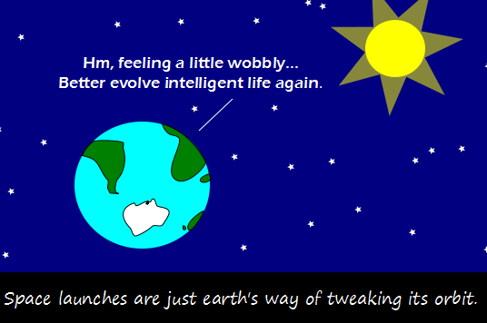

Comic JK 839
When I Feel Like It
⇤
<
?
>
⇥

⇤
<
?
>
⇥
Forum
.
RSS
.
Digg
.
Facebook
.
Reddit
.
Twitter
.
Stumbleupon
Enter your thoughts on number 2.71 here. Please, no spamming, trolling, phreaking, or Milankovich cycles. V-GER and Decker Forever!! >+1 What do you mean, "again"? >Dinosaurs i dont get it... whats the joke? > The joke is that there is ice on the earth again! >> The joke is conservation of momentum, as it applies to the space program >>> The Humor derives from a juxtaposition of states. On the one hand, we have the common view that we are sentient and the earth is not, so everything we do we do to further our own ends, and on the other hand, we have the earth being sentient deciding to evolve "intelligent" life, or from earth's point of view a means of maintaining its position (it's probably rent controlled). Your mother's exponentially growing mass is earth's way of tweaking its orbit. >After she puts her strapon in (y)orbutt. We're never going to catch up to XKCD at this rate... >Yes we are! In 3-4 years or so. never mind that with the loss of both momentum and angular momentum that space-fired projectiles steal, the earth loses some small degree of gyroscopic force, thus making it /more/ wobbly... Like the earth angle!! That's Antarctica!